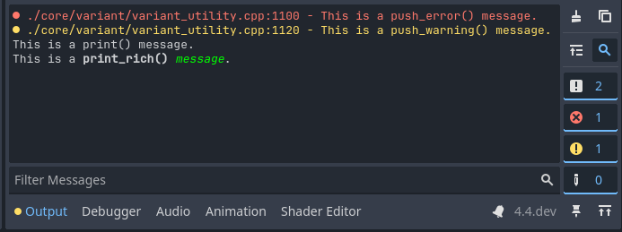

Output panel
The output panel is found at the bottom of the screen. Click on Output to open it.

The output panel provides several features to make viewing text printed by the project (and editor) easier.
Note
The output panel automatically opens when running a project by default. You can control this behavior by changing the Run > Bottom Panel > Action on Play editor setting.
Message categories
Four message categories are available:
Log: Standard messages printed by the project. Displayed in white or black (depending on the editor theme).
Error: Messages printed by the project or editor that indicate a failure of some kind. Displayed in red.
Warning: Messages printed by the project or editor that report important information, but do not indicate a failure. Displayed in yellow.
Editor: Messages printed by the editor, typically intended to be traces of undo/redo actions. Displayed in gray.
Filtering messages
By clicking on the buttons on the right, you can hide certain message categories. This can make it easier to find specific messages you're looking for.
You can also filter messages by their text content using the Filter Messages box at the bottom of the Output panel.
Clearing messages
When running the project, existing messages are automatically cleared by default. This is controlled by the Run > Output > Always Clear Output on Play editor setting. Additionally, you can manually clear messages by clicking the "cleaning brush" icon in the top-right corner of the Output panel.
Printing messages
Several methods are available to print messages:
print(): Prints a message. This method accepts multiple arguments which are concatenated together upon printing. This method has variants that separate arguments with tabs and spaces respectively: printt() and prints().
print_rich(): Same as
print(), but BBCode can be used to format the text that is printed (see below).push_error(): Prints an error message. When an error is printed in a running project, it's displayed in the Debugger > Errors tab instead.
push_warning(): Prints a warning message. When a warning is printed in a running project, it's displayed in the Debugger > Errors tab instead.
For more complex use cases, these can be used:
print_verbose(): Same as
print(), but only prints when verbose mode is enabled in the Project Settings or the project is run with the--verbosecommand line argument.printerr(): Same as
print(), but prints to the standard error stream instead of the standard output string.push_error()should be preferred in most cases.printraw(): Same as
print(), but prints without a blank line at the end. This is the only method that does not print to the editor Output panel. It prints to the standard output stream only, which means it's still included in file logging.print_debug(): Same as
print(), but adds the current stack frame on a new line at the end. Only supported when running from the editor, or when the project is exported in debug mode.print_stack(): Print a stack trace from the current location. Only supported when running from the editor, or when the project is exported in debug mode.
print_tree(): Prints the scene tree relative to the current node. Useful for debugging node structures created at runtime.
print_tree_pretty(): Same as
print_tree(), but with Unicode characters for a more tree-like appearance. This relies on box-drawing characters, so it may not render correctly with all fonts.
To get more advanced formatting capabilities, consider using GDScript format strings along with the above printing functions.
See also
The engine's logging facilities are covered in the logging documentation.
Printing rich text
Using print_rich(), you can print rich text to the editor Output panel and standard output (visible when the user runs the project from a terminal). This works by converting the BBCode to ANSI escape codes that the terminal understands.
In the editor output, all BBCode tags are recognized as usual. In the terminal
output, only a subset of BBCode tags will work, as documented in the linked
print_rich() method description above. In the terminal, the colors will look
different depending on the user's theme, while colors in the editor will use the
same colors as they would in the project.
Note
ANSI escape code support varies across terminal emulators. The exact colors displayed in terminal output also depend on the terminal theme chosen by the user.